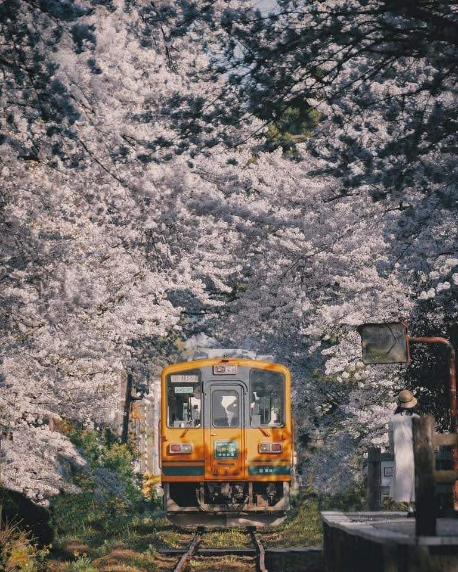

es un país insular de Asia Oriental ubicado en el noroeste del océano Pacífico. Limita con el mar de Japón al oeste y se extiende desde el mar de Ojotsk en el norte hasta el mar de China Oriental y Taiwán en el sur. Parte del anillo de Fuego del Pacífico, Japón comprende un archipiélago de 6852 islas que cubren 377 975 kilómetros cuadrados; las cinco islas principales del país, de norte a sur, son Hokkaidō, Honshū, Shikoku, Kyūshū y Okinawa. Tokio es la capital y ciudad más grande de Japón aunque Yokohama, Osaka, Nagoya, Sapporo, Fukuoka, Kobe y Kioto también son ciudades grandes e importantes.
Japón es el undécimo país con más habitantes del mundo, así como uno de los más densamente poblados y urbanizados. tres cuartas partes del terreno del país son montañosas , concentra su población de 126 millones en estrechas llanuras costeras; Aunque ha renunciado a su derecho a declarar la guerra, el país mantiene Fuerzas de Autodefensa que están clasificadas como el cuarto ejército más poderoso del mundo.

Tren en Japón Japon Paisaje
Salud
¿Como es haya?
Redactado el 17/09/2021
La atención médica la brindan los gobiernos nacionales y locales. El pago de los servicios médicos personales se ofrece a través de un sistema de seguro médico universal que proporciona una relativa igualdad de acceso, con tarifas establecidas por un comité gubernamental. Las personas sin seguro a través de empleadores pueden participar en un programa nacional de seguro médico administrado por los gobiernos locales. Japón tiene una población de 126 millones de habitantes, de los que 124 millones son ciudadanos japoneses (2019). En 2019, el noventa y dos por ciento de la población japonesa total vivía en ciudades. La capital, Tokio, tiene una población de trece millones (2018). Es parte del área metropolitana de Tokio, el área metropolitana más grande del mundo con 38 140 000 habitantes (2016).
Religión
La constitución de Japón garantiza la plena libertad religiosa. Las estimaciones más altas sugieren que el 84-96 por ciento de la población japonesa suscribe al sintoísmo como su religión nativa. Sin embargo, estas estimaciones se basan en las personas afiliadas a un templo, en lugar del número de verdaderos creyentes. Muchos japoneses practican tanto el sintoísmo como el budismo; pueden identificarse con ambas religiones o describirse a sí mismos como no religiosos o espirituales
Redactado el 17/09/2021
El nivel de participación en ceremonias religiosas como tradición cultural sigue siendo alto, especialmente durante festivales y ocasiones como la primera visita de un santuario al comenzar el año nuevo. El taoísmo y el confucianismo de China también han influido en las creencias y costumbres japonesas.
Idiomas
Más del 99 por ciento de la población habla japonés como primer idioma
El conocimiento y las habilidades generales de los jóvenes japoneses de 15 años según el Informe PISA coordinado por la OCDE están clasificadas como las terceras mejores del mundo. Japón es uno de los países de la OCDE con mejor desempeño en lectura, matemáticas y ciencias, con un promedio de estudiantes con una puntuación de 529 y tiene una de las fuerzas laborales más educadas entre los países de la OCDE.